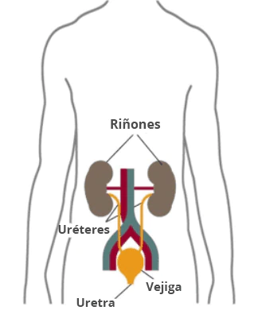

Los riñones son dos órganos en forma de frijol, cada uno aproximadamente del tamaño de un puño. Están ubicados justo debajo de la caja torácica (costillas), uno a cada lado de la columna vertebral. Los riñones sanos filtran alrededor de media taza de sangre por minuto, eliminando los desechos y el exceso de agua para producir orina. La orina fluye de los riñones a la vejiga a través de dos tubos musculares delgados llamados uréteres, uno a cada lado de la vejiga. La vejiga almacena orina. Los riñones, los uréteres y la vejiga son parte del tracto urinario

Esto continuara...